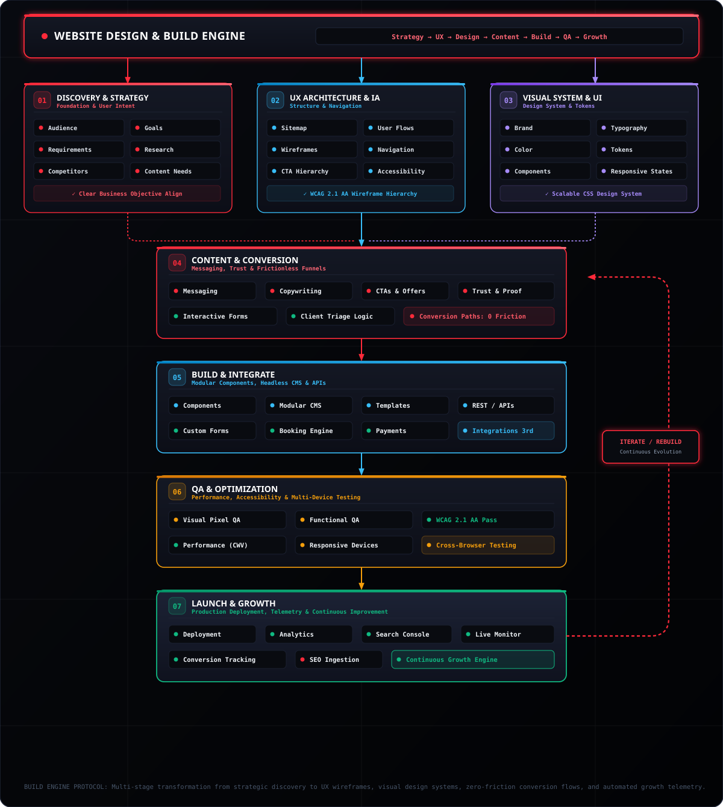
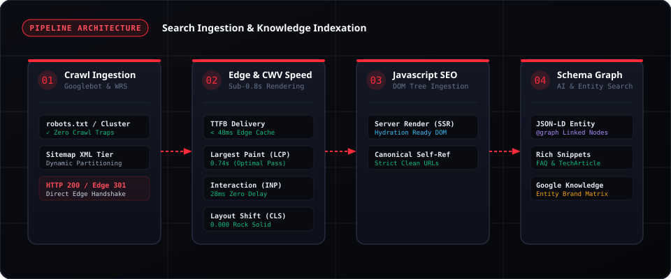

Engineering Search Dominance & Customized Web Experiences.
Hello, I am Hugo Alcini. I operate at the intersection of search engine crawling mechanics and modern web design & builder configuration. By optimizing crawl budget allocation, eliminating client-side hydration bottlenecks, and crafting conversion-focused, responsive UI systems, I turn digital concepts into discoverable, high-converting digital assets.
99/100 CWV
Sub-0.8s LCP • 0ms CLS
Schema.org Graph
JSON-LD Entity Authority
Custom UI/UX
Responsive • High-Converting
Builder & CMS
Modular Blocks • Jamstack
Two Specialized Technical Disciplines
Toggle between the tabs below to explore deep architectural insights, structured methodologies, and live interactive showcases for each discipline.
Website Design & Build Engine: Strategy → UX → Design → Content → Build → QA → Growth
*A great website balances striking visual elegance with flawless conversion engineering.* As a web designer and technical builder, I execute a structured 7-phase lifecycle engine: aligning Discovery & Strategy, structuring UX Architecture & IA, crafting scalable Visual Design Systems, engineering Zero-Friction Conversion Funnels, building with Modern Modular CMS/Jamstack, rigorously validating via Multi-Device QA, and executing Telemetry-Driven Growth Iterations.

7 Structured Phases of the Website Design & Build Engine
From strategic audience discovery through accessible wireframing, bespoke UI tokens, modular integrations, and closed-loop conversion tracking.
Discovery & Strategy
Conducting deep audience profiling, business goal definition, competitive benchmarking, and content requirement mapping to establish unbreakable foundations.
UX Architecture & IA
Structuring friction-free user flows, multi-tier sitemaps, intuitive navigation hierarchies, prominent CTA prioritization, and WCAG 2.1 AA wireframes.
Visual System & UI Design
Crafting bespoke visual brand identities, harmonious typography scales, authoritative color palettes, scalable CSS design tokens, and responsive component states.
Content & Conversion
Authoring high-converting sales copy, value propositions, social proof elements, interactive client triage questionnaires, and zero-drop-off conversion funnels.
Build & Integrate
Configuring modular component libraries, flexible CMS templates, custom client booking engines, automated email triage dispatch, and payment gateways.
QA & Optimization
Executing pixel-perfect visual QA, functional link verification, 100% Core Web Vitals profiling, screen reader accessibility, and cross-browser stress testing.
Launch & Growth (Iterate)
Deploying to multi-region edge CDNs, connecting Google Analytics & Search Console, monitoring conversion tracking cohorts, and continuously iterating for compounding growth.
Autonomous SEO Operating System: 6-Stage Closed-Loop Search Intelligence
*Search visibility is not a static checklist—it is an autonomous, self-regulating operating system.* Modern search engines index web applications through complex Web Rendering Services (WRS), strict crawl budgets, and dynamic Knowledge Graphs. I architect each SEO pillar as a specialized autonomous agent operating in a continuous closed-loop pipeline: Inputs → Diagnostics → Decisions → Actions → Validation → Reporting. This continuous telemetry loop ensures algorithmic resilience, high-velocity indexation, and market-dominating rankings.

Pillars Re-engineered as Autonomous Operating System Agents
Select a stage below to inspect how data streams from raw inputs through automated diagnostics and edge actions into self-tuning feedback loops.
Content & Search Intent Agent
SERP Intent Clustering & Semantic Topical Authority
SERP feature layouts, query intent vectors (informational, commercial, transactional), competitor TF-IDF entity graphs & search demand clusters.
Intent mismatch detection, semantic topical coverage gap analysis, content freshness decay scoring & heading hierarchy linting.
Determines content refresh vs net-new landing page build, primary entity focus weighting & FAQ / schema insertion logic.
Dynamic brief generation, NLP entity enrichment (TF-IDF vectors), title tag & meta hook optimization, automated semantic markdown restructuring.
SERP snippet simulation, NLP entity match score verification (>95%), and topical completeness benchmarking against top-3 ranking competitors.
Target keyword intent alignment score, content velocity metrics, ranking trajectory & automated feedback into Agent 04 for CTR monitoring.
Information Architecture & Links Agent
PageRank Flow, Hub Silo Topology & Click-Depth Optimization
Full site crawl graph, URL depth hierarchy, internal anchor text distribution log, click-depth models & orphan URL scans.
PageRank leakage detection, excessive crawl depth (>3 hops), orphan page identification & internal anchor text cannibalization triage.
Hub-and-spoke topic cluster routing, anchor text variation weighting & automated breadcrumb hierarchy restructuring.
Contextual in-body link injection, breadcrumb Schema JSON-LD generation, automated hub page index linking & pruning dead link paths.
Link graph centrality re-calculation, crawl depth verification (100% of revenue routes < 3 clicks), and broken link zero-tolerance check.
Internal PageRank distribution visual, crawl depth reduction index, orphan resolution log & real-time link equity flow telemetry.
Authority & Off-Page Signal Agent
Backlink Trust Velocity, Citation Reclamation & Spam Triage
Backlink profile feeds (Ahrefs/Majestic API), referring domain quality scores, toxic link spam patterns & unlinked brand mentions.
Domain Rating / Trust Flow anomaly detection, anchor text spam ratio check, lost high-value link alerts & unlinked brand citation opportunities.
Disavow file candidate triage, automated outreach target prioritization, brand mention reclamation routing & digital PR angle selection.
Disavow file generation & automated submission, outreach pitch generation for unlinked mentions & authoritative asset syndication routing.
Disavow syntax validation, referring domain toxicity score reduction & live link status verification (HTTP 200 & follow/nofollow status).
Link velocity delta (+/- net RD), Domain Trust Flow trajectory & toxic link neutralization audit streaming into domain health scores.
Search Console & Feedback Loop Agent
GSC Telemetry, Cannibalization Triage & Closed-Loop Adaptation
Google Search Console API (Clicks, Impressions, CTR, Position), Bing Webmaster API, GA4 conversion cohorts & server bot log streams.
CTR underperformance vs expected curve, query cannibalization detection, ranking drop early warning & indexation status regression.
Re-indexing priority queueing, title/snippet split-test triggers, cannibalized page 301 vs canonical consolidation & content refresh scheduling.
Instant Google Indexing API ping, automated title tag variation deployment, canonical tag consolidation & conversion path attribution tagging.
Post-action GSC impression re-evaluation, CTR lift verification (+15–35%) and indexation status confirmation (Valid Green in GSC).
Streams real-time query CTR and cannibalization telemetry back into Agent 01 (Content Intent) and Agent 02 (Internal Linking) for self-tuning optimization.
Crawl Ingestion & Edge Delivery Agent
Sub-0.8s CWV, Crawl Budget Allocation & Hydration Elimination
Server Access Logs, Googlebot / Bingbot Hit Rates, Edge CDN Headers, DOM Trees, CWV RUM Telemetry, robots.txt & XML sitemaps.
Crawl trap detection, TTFB/LCP/INP profiling, hydration mismatch & SSR pre-render audit & status code anomalies.
Dynamic crawl throttling, cache header policy updates, edge worker rewrite routing & server-rendered DOM hydration adjustments.
Edge-side 301 rewrites, stale-while-revalidate headers, critical CSS inlining & XML sitemap auto-partitioning.
Synthetic bot crawl test, Googlebot user-agent simulation, Lighthouse / CrUX API verification (100% CWV pass).
Edge latency breakdown (<48ms), crawl budget efficiency score, server health & error rate telemetry.
Schema Knowledge Graph & Entity Agent
JSON-LD @graph Entity Topology & Google Knowledge Graph Dominance
Page content entity extractions, Wikidata / Wikipedia entity URIs, organization credentials, author personas & product catalogs.
Schema validation errors (SDTT / Schema.org linter), missing @id entity node connections & disjointed author relationships.
Multi-type entity graph compilation strategy, rich snippet eligibility mapping & nested @graph linking topology.
Injecting deep JSON-LD graphs with interconnected @id references, author credential linking, FAQ & TechArticle item schemas.
Google Rich Results API live validation, schema.org linter zero-error confirmation & syntax compliance checks.
Rich result snippet capture rate, Knowledge Graph entity brand alignment score & AI Overview summary inclusion.
The Design & SEO Growth Flywheel
Most organizations treat website design and technical SEO as separate silos. Unifying both disciplines creates an insurmountable competitive advantage.
Rank for High-Intent Queries
Prospective clients search for exact solutions (*"family counselor near me"*, *"Next.js technical audit"*). By structuring web pages with deep Schema.org metadata and crawl-optimized URLs, your website captures top Google rankings and AI summaries.
Zero-Friction Conversion UX
When visitors land on your site, clean visual hierarchy, intuitive triage questionnaires, and sub-second load times eliminate bounce rates and guide prospects directly into booking meetings or consultations.
Sustainable Domain Authority & Growth
A well-crafted, responsive digital experience creates natural backlinks, stellar customer reviews, and high dwell times—signaling ultimate domain quality to Google's ranking algorithms.
Featured Case Studies & Projects
Real-world architectures, customized website builds, and performance overhauls.
Ready to Elevate Your Website & Search Rankings?
Whether you need a complete custom website design & builder configuration, or a comprehensive Technical SEO & Core Web Vitals audit, I provide hands-on technical execution.
- Email: hugoalcini@gmail.com
- Specialization: Technical SEO • Website Design & Configuration
- Availability: Remote Contracts • Custom Web Projects